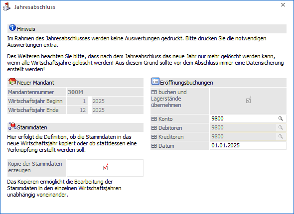
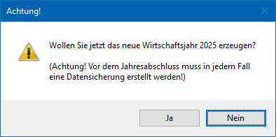

Folgende Datenbereiche müssen nach dem Jahresabschluss noch getrennt bearbeitet werden, sofern die Checkbox zur automatischen Buchung der Eröffnungsbuchungen nicht aktiviert wurde:
Finanzbuchhaltung
Durch den Jahresabschluss werden zwar alle Stammdaten (abhängig davon, ob die Checkbox "Kopie der Stammdaten erzeugen" aktiviert war) und Offene Posten übernommen, es müssen aber auch die Eröffnungsbilanzwerte aus dem alten Jahr übertragen werden (sofern das nicht im Zuge des Jahresabschlusses bereits durchgeführt wird). Hierfür gibt es in der WinLine FIBU den Menüpunkt
1 Abschluss
1 EB-Buchung
Hier können die Salden aus dem alten Wirtschaftsjahr nach Kontenbereichen getrennt selektiv übernommen werden, wobei die Übernahme beliebig oft wiederholt werden kann (wenn sich die Salden im alten Wirtschaftsjahr durch Um- und Nachbuchungen verändert haben).
Fakturierung
In der WinLine FAKT sind folgende Bereiche nach einem Jahresabschluss zu betrachten:
ü Stammdaten
Der Jahresabschluss
überträgt sämtliche Stammdaten (Personenkonten, Sachkonten, Steuersätze,
Belegarten, Vertreter, Textbausteine, Artikelgruppen und Artikel, etc. (abhängig
davon, ob die Option "Kopie der Stammdaten erzeugen" aktiviert war) in das neue
Wirtschaftsjahr.
ü Nummernkreise
Nach dem
Jahresabschluss sollten die Belegnummernkreise, welche wiederum in den
Belegarten hinterlegt sind, überarbeitet und auf neue Nummern umgestellt werden.
Werden die Belegnummernkreise nicht abgeändert und im alten WJ werden Belege
erfasst, so kann es zu doppelten Belegnummern kommen (diese Konstellation führt
zu einer Warnung beim Datencheck, hat aber keine weitere Auswirkung auf die
Konsistenz der Daten). Nur wenn die Belegnummernkreise im neuen Wirtschaftsjahr
abgeändert werden, ist eine zwangsläufige Vergabe von doppelte Belegnummern zu
verhindern.
ü Bewegungsdaten
Im Bereich der
Bewegungsdaten ist folgendes zu beachten:
ü Lagerstandsübernahme
Wurden im
Zuge des Jahresabschlusses keiner Lagerwerte übertragen, so kann dieses auch
später über das Programm…
1 WinLine FAKT
1 Abschluss
1 Lagerstandsübernahme
… erfolgen. Hier können die Lagerstände (Lagerstand und Lagerwert) aus dem alten Wirtschaftsjahr nach Artikeln getrennt selektiv übernommen werden, wobei die Übernahme beliebig oft wiederholt werden kann (wenn sich die Lagerstände im alten Wirtschaftsjahr durch Um- und Nachbuchungen verändert haben).
ü Offene Belege
Der
Jahresabschluss überträgt alle Belege (Angebote, Aufträge, Lieferscheine,
Fakturen) automatisch in das nächste Wirtschaftsjahr.
ü Verkaufsstatistik
Der
Jahreswechsel verändert keine Daten in dieser Auswertung.
ü Vertreter
Die
Vertreterstammdaten und Journalzeilen werden automatisch in das neue
Wirtschaftsjahr übernommen.
Kostenrechnung
Die Daten der Kostenrechnung werden komplett - inklusive der Journalzeilen (Stammdaten, Umlagetabellen, Budgetwerte) in das neue Wirtschaftsjahr übernommen - abhängig davon, ob die Option "Kopie der Stammdaten erzeugen" aktiviert war oder nicht. Dabei werden aber keinerlei Daten bereinigt oder gelöscht, damit die im "alten" Wirtschaftsjahr erfassten Daten auch im neuen Wirtschaftsjahr bearbeitet werden können.
Wenn die Daten im neuen Wirtschaftsjahr nicht benötigt werden, können sie im Programm…
1 WinLine START
1 Abschluss
1 KORE-Journal komprimieren
… selektiv gelöscht werden. Befinden sich in der Kostenrechnung Stammdaten, die nicht mehr benötigt werden (erledigte Projekte etc.), müssen diese auf Inaktiv gesetzt und dann durch einen Reorg gelöscht werden.
Anlagenbuchhaltung
Der Jahresabschluss trägt auch die Daten der Anlagenbuchhaltung automatisch mit dem aktuellen Stand in das neue Jahr vor.
Damit kann bereits mit Beginn des neuen Wirtschaftsjahres begonnen werden, neue Wirtschaftsgüter anzulegen bzw. die periodische AfA berechnen und buchen zu lassen. Der Ablauf wäre wie folgt:
ü Der Jahresabschluss erzeugt das neue Wirtschaftsjahr, die Anlagendaten werden 1:1 in das neue Wirtschaftsjahr kopiert.
ü Im neuen Jahr können Zugänge, Teilwertabgänge, Abgänge etc. bereits erfasst werden.
ü Irgendwann ist das alte Jahr bereit für den AfA-Lauf - d.h. es wird der endgültige AfA-Lauf im alten Wirtschaftsjahr durchgeführt (danach können im alten Jahr keine Daten in der ANBU mehr verändert werden)
ü Durch die Jahresabschreibung werden die Beginnwerte im neuen Wirtschaftsjahr automatisch aktualisiert.
Zusätzlich ist auf folgendes zu achten:
ü Um- und Nachbuchungen im alten
Wirtschaftsjahr
Im Zuge der Um- und Nachbuchungen werden laufend noch Werte
im alten Wirtschaftsjahr verändert. Diese Änderungen geben Sie im Mandanten des
alten Wirtschaftsjahres ein. Durch die Buchungen im alten Wirtschaftsjahr werden
automatisch die Werte im neuen Wirtschaftsjahr aktualisiert und sind in der
nächsten Periodenabschreibung (und natürlich in der endgültigen
Jahresabschreibung zu Ende des Wirtschaftsjahres) berücksichtigt. Es muss
hierfür kein zusätzliches Programm angewählt werden. Wenn alle Änderungen
eingegeben worden sind, muss im ALTEN Wirtschaftsjahr der endgültige AfA-Lauf
gefahren werden, damit auch die FIBU-Buchungen automatisch in die WinLine FIBU
(natürlich ebenfalls im alten Wirtschaftsjahr) übergeben werden können.
In
der Jahres-AfA am Jahres-Ende berechnet das Programm automatisch die endgültigen
AfA-Werte und korrigiert die periodischen AfA-Buchungen.
ü Stammdatenänderungen im alten
Wirtschaftsjahr (wenn die Stammdaten beim Jahresabschluss kopiert
werden)
Werden Stammdaten, wie z. B. eine Kostenstelle oder der Standort im
alten Wirtschaftsjahr geändert, so werden diese Änderungen nicht automatisch in
das neue Wirtschaftsjahr übernommen.
Die Übernahme wird wahlweise je
Anlagegut in einem separaten Programm vorgenommen. Dies erfolgt in der WinLine
ANBU in dem Menüpunkt…
1 Stammdaten
1 Anlagenstamm-Jahresabgleich
Lohnverrechnung
Im Zuge des Jahreswechsels werden die Daten der Lohnverrechnung 1:1 übernommen. Das hat mehrere Gründe:
ü In der Lohnverrechnung müssen die Daten jahresübergreifend zur Verfügung stehen (Durchschnittsberechnung).
ü Die Lohnverrechnung ist auch so ausgelegt, dass mehrere Jahre nebeneinander verwaltet werden können.
ü Wenn in der FIBU ein gebrochenes Wirtschaftsjahr gebucht wird, muss der Jahreswechsel nicht öfters gemacht werden. Der Lohnverrechnung muss nur in einen neuen Mandanten einsteigen.
Vereinfachter Jahresabschluss
Wenn der Menüpunkt "Jahresabschluss" in ein Cockpit hinterlegt wird, kann gewählt werden, ob dieser Eintrag die vereinfachte Darstellung des Menüpunkts öffnet.

Wenn der Jahresabschluss anschließend über diesen Cockpit-Eintrag aufgerufen wird, wird die Checkbox "EB buchen und Lagerstände übernehmen" aktiviert und sofort das Konto "9800" eingetragen, sofern dieses Konto existiert und es sich um einen österreichischen Mandanten handelt. Das Feld "EB Datum" wird mit dem Ende des aktuellen Wirtschaftsjahres +1 Tag vorbelegt.
Wenn alle Prüfungen erfolgreich waren, kommt direkt die Frage, ob das neue Wirtschaftsjahr jetzt erzeugt werden soll.

Achtung
Bitte zuvor unbedingt eine Datensicherung des aktuellen Mandanten durchführen!